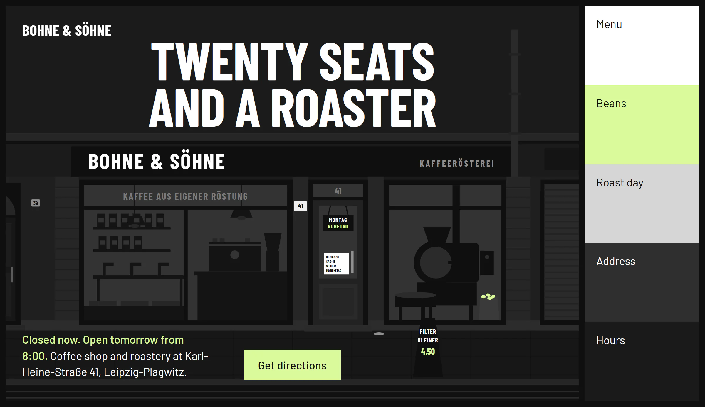
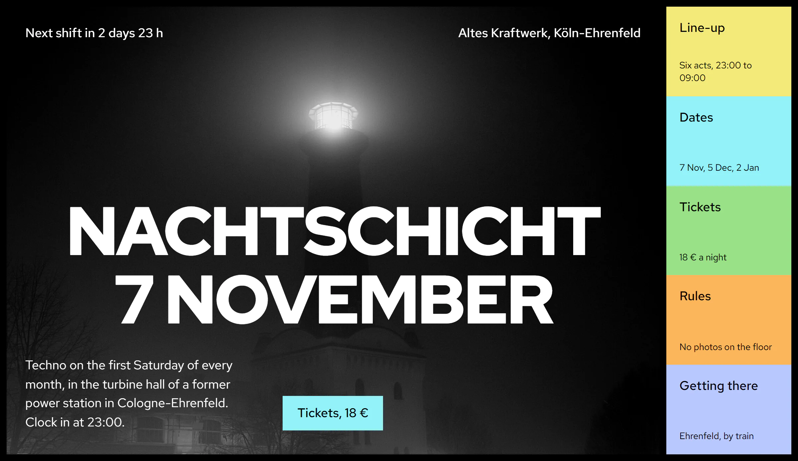
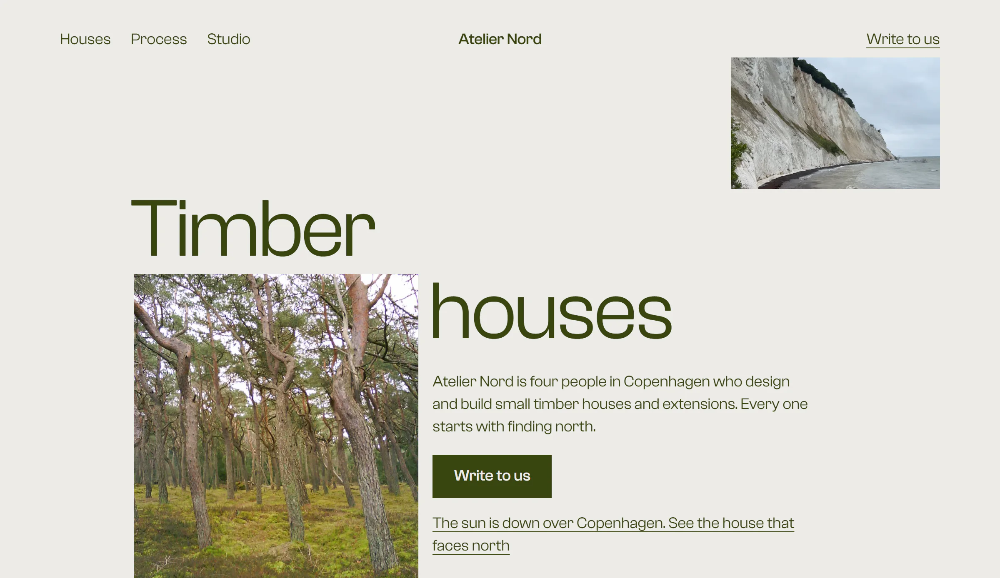
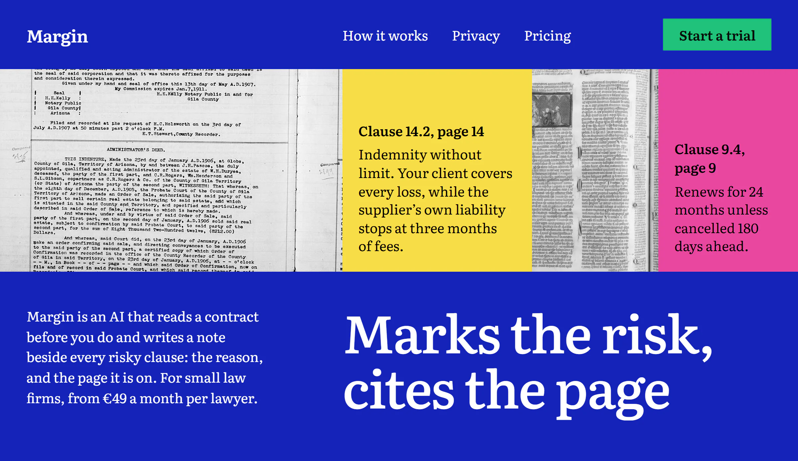
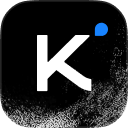

Pictures
Finds real pictures and credits them
It searches Openverse, Wikimedia Commons, the Art Institute of Chicago and the Met. Only CC0, public domain, CC BY and CC BY-SA, with the credit on the page.
scripts/assets.mjsIt gives Claude Code, Codex and Cursor an art direction from 247 curated sites, real pictures and a real-browser check, so the pages they build look designed, not generated.




The draw
Instead of the one average page every model makes, draw.mjs deals three of these at random, away from your recent builds.
Your agent picks the one that fits.
See how a build runsOne install gives your agent a library distilled from 247 curated sites, scripts that deal from it, and a browser to check the result in.
It searches Openverse, Wikimedia Commons, the Art Institute of Chicago and the Met. Only CC0, public domain, CC BY and CC BY-SA, with the credit on the page.
scripts/assets.mjsIt opens the page at 1440, 768 and 390 pixels and fails it on slop. Then it fixes the top three problems in its own screenshots, up to three rounds.
scripts/inspect.mjsSince v2.1 it tells a page from an app screen and builds admin views, settings and dashboards by their own rules: quiet panels, aligned figures, colour spent on data.
inspect.mjs --appNo API keys and nothing else to install. The skill runs its scripts with Node 22 or newer and an installed Chrome, Edge or Chromium.
Installs design-taste-frontend with the skills CLI, for any agent that reads SKILL.md files. Run it again to update.
TasteCode by the Taste Skill team
A workspace for Codex, Claude Code and Grok with a design agent built in. Free and open source.
A TasteCode window with its design agent at work on a brief for a coffee shop website. It locks in the brief, creates a brand direction, plans the page, gathers photographs, builds the site, starts a local preview and reviews the page at 1440 and 390 pixels wide.
Node 22 or newer and Chrome, Edge or Chromium. It installs nothing and uses no API keys; it needs the internet only to find pictures.
Roughly 30 to 45 minutes and a few hundred thousand tokens, including up to three rounds of fixing its own screenshots.
Open collections such as Wikimedia Commons, Openverse and the Met. Only public domain, CC0, CC BY and CC BY-SA, credited on the page. Swap in your own when you have them.
Yes. The rules are about design, not a framework, and a redesign keeps the stack you already have.
Yes, since v2.1. Admin views, settings and dashboards get their own route: a style dealt from real product screens and app-specific checks.
Soft, minimalist, brutalist, gpt-taste, Stitch, v1 and v2 (experimental) live in taste-skill-classics, the image skills in imagegen-skills, under the same install names. See where every skill went.
Taste Skill is free and MIT licensed. Sponsors pay for the time that goes into it. Built something with it? Tag @lexnlin on X.

KimiGet a Kimi API key. Taste Skill users get 10% bonus API credits on their first purchase.
Part of the Vercel Open Source Program, which hosts this site.